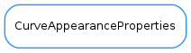

CurveAppearanceProperties¶

-
class
CurveAppearanceProperties(sStyle=None, sSize=None, sColor=None, sFill=None, lStyle=None, lWidth=None, lColor=None, cStyle=None, yAxis=None, cFill=None, title=None, visible=None)[source]¶ Bases:
objectAn object describing the appearance of a TaurusCurve
-
applyToCurve(curve)[source]¶ applies the current properties to a given curve If a property is set to None, it is not applied to the curve
-
conflictsWith(other, strict=True)[source]¶ returns a list of attribute names that are in conflict between this self and other
-
static
inConflict_update_a(a, b)[source]¶ This function can be passed to CurvesAppearance.merge() if one wants to update prop1 with prop2 except for those attributes of prop2 that are set to None
-
classmethod
merge(plist, attributes=None, conflict=None)[source]¶ returns a CurveAppearanceProperties object formed by merging a list of other CurveAppearanceProperties objects
Note: This is a class method, so it can be called without previously instantiating an object
Parameters: - plist (
sequence<CurveAppearanceProperties>) – objects to be merged - attributes (
sequence<str>) – the name of the attributes to consider for the merge. If None, all the attributes will be merged - conflict (
callable) – a function that takes 2 objects (having a different attribute)and returns a value that solves the conflict. If None is given, any conflicting attribute will be set to None.
Return type: Returns: merged properties
- plist (
-